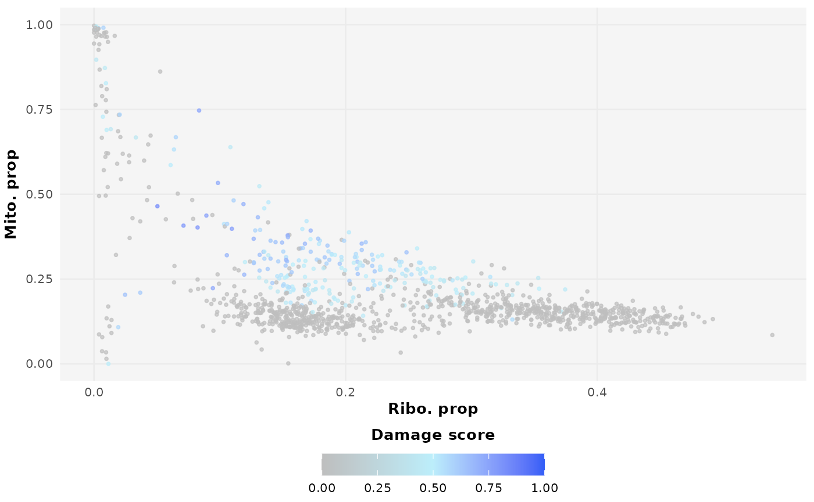

Tutorial overview
The goal of DamageDetective is to simplify the process
of making informed and reproducible damaged cell filtering decisions.
This tutorial provides an outline of the steps needed to achieve
this:
- Data preparation
- Parameter selection
- Damaged cell detection
Ensure the following packages are installed and made available in your R environment to follow along:
-
DamageDetective,ggplot2,Seurat,SeuratData,scRNAseq,SingleCellExperiment, andpatchwork.
Workflow overview
Before discussing how DamageDetective’s core function,
detect_damage, operates, it may be helpful for a user to
understand how the detection process works.
The damage detection process is made up of two core components,
first, creating artificial profiles of damage using the cells, and
second, comparing the cells to the artificial profiles to estimate the
extent of damage. Ultimately, detect_damage outputs a score
from 0 to 1 indicating the estimated damage level of each true cell that
can be used to filter cells.
Damage simulation
Damage is simulated by the loss of cytoplasmic RNA, a consequence of loss in plasma membrane integrity-a defining principle of damage used in many cell viability assays. Here, RNA that is not in the cytoplasm, such as that enclosed by the mitochondria or inside nuclear speckles, is more protected from loss. When looking at the total RNA of cells, true, unbroken cells are more likely to have a high proportion of cytoplasmic RNA compared to damaged, broken where due to escape out the impaired plasma membrane, the proportion of protected RNA, mitochondrial and nuclear RNA, appear elevated.
DamageDetective assumes that the proportion of RNA lost
is directly related to the extent of cellular damage. This allows for
artificial damaged cell profiles to be created by imitating the loss of
cytoplasmic RNA. The artificial cells will lose a proportion of
cytoplasmic RNA equivalent to a target damage level, given as a number
from 0 to 1.
This loss is achieved through probabilistic sampling of transcripts from the counts of the cell. Operating at the level of individual cells, a score is assigned to genes according to the abundance of transcripts present for that gene in that cell. This is expanded to transcript level representations such that transcripts from the same gene have an equal probability of being lost. Transcripts are then sampled without replacement according to the probability scores until the target transcript loss is met.
E.g. Assume a cell has 2500 transcripts and a target of damage level of 0.8. The cell is made up of 2380 cytoplasmic transcripts, and 120 transcripts from protected origins such as the mitochondria and nuclear speckles.
To imitate the intended damage, the cell must lose 80 % of its cytoplasmic RNA, 1904 transcripts. Probability scores are assigned to each cytoplasmic gene according to their abundance in the cell. Transcripts are then sampled from this probability without replacement until 1904 transcripts have been sampled.
Initial mitochondrial proportion: 120 / 2500 = 0.048
Mitochondrial proportion in damaged cell: 120 / 716 = 0.168
Damage estimation
detect_damage estimates the damage level of each true
cell by measuring its similarity to artificially damaged cells.
Using the PC embeddings, a set of cells with the highest similarity to each true cell, the nearest neighbours (NN), is collected. The proportions of nearest neighbours that originate from damage level are found. The damage level of the artificial set to which the true cell shows the highest proportion of nearest neighbours is selected as the cell’s estimated damage level. This is scaled to score the cells in each set in a way that reflects the relative differences in proportion.
Data preparation
DamageDetective operates with single cell data in the
form of a compressed, column-oriented sparse matrix
(dgCMatrix) in R. This format efficiently
handles the sparse nature of single cell data by indexing only non-zero
elements within each column, i.e., only the rows containing actual
expression values. We will begin by showing how three common single cell
data storage types can be converted to this form to act as the starting
point for damage detection.
These include,
- Alignment output files
-
Seuratobject -
SingleCellExperiment(sce) object
Convert data to sparse matrix format
1. Alignment output
Alignment output comes in the form of three files,
-
features.tsv, containing the gene names
-
barcodes.tsv, containing the cell identifiers
-
matrix.mtx, containing the input values (gene expression values).
These can be compiled using ReadMtx offered by
Seurat which simplifies the count matrix compilation
process into one function. This includes the processes of decompressing
zipped files, mapping feature names to HGNC gene symbols, and converting
the matrix to sparse format. The ReadMtx() output can be
used directly as input for DamageDetective.
We will use publicly available alignment data from the 10X Genomics website for demonstration, specifically the ‘1k PBMCs from a healthy donor (v3)’ dataset, which can be downloaded here following the link named “Feature / cell matrix (filtered)”. This should begin the download of a 9.6 MB directory containing ‘filtered_feature_bc_matrix’ sub-directory housing the alignment files.
# Set the file paths relative to location on your device
matrix_file <- "~/Projects/filtered_feature_bc_matrix/matrix.mtx.gz"
barcodes_file <- "~/Projects/filtered_feature_bc_matrix/barcodes.tsv.gz"
features_file <- "~/Projects/filtered_feature_bc_matrix/features.tsv.gz"
# Construct the sparse matrix
alignment_counts <- Seurat::ReadMtx(
mtx = matrix_file,
cells = barcodes_file,
features = features_file
)Note: Please adjust the location,
~/Projects, according to where the files are saved on your device.
2. Seurat object
Seurat is one of the most popular packages for single
cell analysis in R. Along with an extensive suite of
functions, it offers its own S4 class of data storage for housing the
count matrix, aptly named the Seurat object. By default,
the count matrix is already in compressed column-oriented sparse form in
the Seurat object and can be used as input for
DamageDetective after it is extracted from the assay
slot.
You can use the SeuratData package to retrieve a
publicly available Seurat object to test this. This object
stores the data from peripheral blood mononuclear cells (PBMCs)
sequenced using the 10X Genomics platform.
devtools::install_github('satijalab/seurat-data')
library(SeuratData)
# Retrieve the dataset of interest
SeuratData::InstallData("pbmc3k")
data("pbmc3k")
# Extract the count matrix
pbmc3k_counts <- pbmc3k[["RNA"]]$counts3. sce object
Bioconductor offers its own suite of packages for single
cell analysis in R with their own single cell data storage type known as
the SingleCellExperiment (sce) object. Here,
the count matrix is stored as a delayed matrix. This format enables
memory-efficient operations by delaying computations until
explicitly requested, rather than storing all values in memory upfront.
However, DamageDetective computations require repeated
access to the matrix and delays at each request greatly accumulate to
slow down this process. We therefore convert the delayed matrix to a
sparse matrix via a dense matrix intermediate.
You can use the scRNAseq package to retrieve a publicly
available sce object to test this. This object stores PBMC
data of multiple samples from a study investigating influenza and yellow
fever vaccine responsiveness. We will focus on the “234_d0” sample
coming from an individual with a high vaccine responsiveness.
if (!require("BiocManager", quietly = TRUE))
install.packages("BiocManager")
BiocManager::install("scRNAseq")
library(scRNAseq)
# Retrieve multisample dataset
pbmc_sce <- scRNAseq::fetchDataset("kotliarov-pbmc-2020", "2024-04-18")
# Extract sample of interest
metadata <- SummarizedExperiment::colData(pbmc_sce)
sample_sce <- subset(metadata, sample == "234_d0")
sample_sce <- rownames(sample_sce)
# Subset and convert to sparse format
pbmc_counts <- SummarizedExperiment::assay(pbmc_sce, "counts")
sample_counts <- pbmc_counts[, sample_sce]
sample_counts <- as.matrix(sample_counts)
sample_counts <- as(sample_counts, "dgCMatrix")Note: Like many single cell analysis packages, DamageDetective can only operate with one single cell dataset at a time. Hence why we work with only the “234_d0” sample above.
Parameter selection
Once the count matrix is in the correct format, the
detect_damage function of DamageDetective can
be run immediately. However, detect_damage accepts
additional parameters. These parameters can be divided into two
categories, those that alter the computation and result in a different
output, computational parameters, and those that adjust
how the user receives the output but cannot change the output itself,
aesthetic parameters. Both will be explored
briefly.
Computational parameters
Dataset-defined computational parameters
Of the parameters that affect the output of the detection algorithm, some have only one possible input based on the data being investigated. In many cases, these require no alteration from the defaults. These include,
organism
What organism was the data derived from? Default of human,
("Hsap") and accepts "Mmus". To use a
non-default organism, specify the strings that can be used to identify
the mitochondrial genes (mito_pattern), ribosomal genes
(ribo_pattern), and, if known, a set of genes that are
securely located within the nucleus, such as within nuclear speckles.
The format for this non-default input is demonstrated below using the
information known for humans,
organism <- list(mito_pattern = "^MT-",
ribo_pattern = "^(RPS|RPL)",
nuclear = c("NEAT1","XIST", "MALAT1"))annotated_celltypes
Are cell types known? This has a default of FALSE,
seeing that the typical single cell pre-processing workflow works to
uncover cell type annotations, where this knowledge is not known from
the start. This parameter allows a user to specify whether the input
data is already annotated and ensures the simulations are distributed
evenly across the cell types present. While this is already accounted
for naturally by the clustering processes of the damage detection
algorithm, this provides additional security.
User-defined computational parameters
The remaining computational parameters have a wider range of input
possibilities. While the user is free to adjust these as they see fit,
we recommend using the defaults provided as they resulted in consistent
and intended performance during package development. This being said,
the ribosome_penalty parameter must be adjusted according
to the input data and is explored in more detail below.
seed
Ensures the output of the damage detection algorithm can be reproduced exactly. This can be any number and has very little impact over the output, i.e., a seed of 7 and a seed of 7777 will provide very similar outputs. If present, differences between seed outputs are due to the stochastic nature of the damage simulation where cytoplasmic RNA transcripts are lost based on random sampling guided by abundance-derived probability scores. These probability scores are fixed and, unless enacted in cells with low sparsity and abundant expression values-atypical characteristics for single cell data, will not be greatly impacted by variation in seed values.
kN
The number of nearest neighbours that are considered in the analysis
during damage detection. This analysis entails finding the proportion of
the kN nearest neighbours of each true cell that are of
artificial, or ‘damaged’, origin. Since only cells that are present can
be considered as possible neighbours, kN is limited to the
size of the dataset. As the value of kN increases, it
expands the analysis to cells that are less closely related, increasing
the probability that artificial cells will be present by random chance.
By default, DamageDetective selects kN that is
a third the size of the input dataset.
target_damage
This parameter is related to the damage simulation step that relies on the proportion of cytoplasmic RNA loss to estimate of the extent of cellular damage. In other words, cells where more cytoplasmic RNA is lost are assumed to be more likely to be damaged than cells where very little to no cytoplasmic RNA is lost. The simulation process works within specific target ranges of cytoplasmic RNA loss that are controlled by this parameter. For damage detection, we are interested in simulating cells that are damaged and require removal, meaning we set the target damage extent to a higher range. The default provided is between 65 and 100 % of cytoplasmic RNA loss.
pca_columns
After simulating damage, the true cells are compared to the artificially damaged cells to determine whether they are similar enough to be inferred as damage themselves. The means of this comparison is principal component (PC) analysis where the variables to be considered are specified using this parameter. The variables available include traditional metrics for single cell quality control including mitochondrial percentage and library size, as well as newer metrics such as ribosomal and MALAT1 percentages. The complete set of variables available are,
- features
- counts
- mitochondrial proportion (mt.prop)
- ribosomal proportion (rb.prop)
- MALAT1 proportion (malat1.prop)
Additionally, options providing data transformations that reduce the skew of the data,
- log(features)
- log(counts)
- mt.logit
- malat1.arcsin
The default for this parameter is c(“log.features”, “log.counts”, “mt.prop”, “rb.prop”).
filter_threshold
A value between 0 and 1 to determine the level of damage, or
proportion of RNA loss, above which cells will be excluded. By default,
DamageDetective offers the threshold of 0.5.
Values greater than 0.5 reflect more permissive filtering
while those closer to 0 reflect more stringent filtering.
We recommend the default but suggest that if adjustments are made, they
are informed by inspecting the output detect_damage plots,
generate_plot = TRUE.
ribosome_penalty
Damage simulation for DamageDetectvie is carried out by
the probabilistic loss of cytoplasmic RNA according to transcript
abundance, i.e., the chance of a transcript from a gene escaping and
being lost from a cell is related to how many of those transcripts were
present in the cell. However, it was observed that a subset of
cytoplasmic RNA, ribosomal RNA, exhibits losses that are less frequent
than what is estimated by abundance alone. The parameter
ribosome_penalty accounts for this discrepancy.
ribosome_penalty is a value between 0 and 1 that is
multiplied by the probability scores of ribosomal RNA loss, reducing the
scores and making it less likely for the ribosomal transcripts to be
sampled for loss.
The impact of changing ribosome_penalty can be explored
using the plots generated from simulate_counts below. The
idea here is to see how well the artificial cells generated with a
selected penalty describe the true cells. In other words, how well the
coloured dots superimpose the grey dots. You will see that as you
increase the penalty, i.e. go from values closer to 1 to values closer
to
0,
the coloured dots shift from an extreme position on the left-hand side
of the plot to a more central position. At what point along this range
true cells exist is dataset-dependent but generally lies closer to 0.
Where,
-
count_matrixis the data in a sparse matrix format as prepared above, -
ribosome_penaltyis a numeric between 0 and 1, and -
damage_proportionis a number between 0 and 1 specifying the amount of artificial cells to create relative to the input data (setting this to a lower value makes the computation faster).
no_penalty <- DamageDetective::simulate_counts(
count_matrix = alignment_counts,
ribosome_penalty = 1,
damage_proportion = 0.1,
target_damage = c(0.8, 1),
plot_ribosomal_penalty = TRUE,
seed = 7
)
medium_penalty <- DamageDetective::simulate_counts(
count_matrix = alignment_counts,
ribosome_penalty = 0.5,
damage_proportion = 0.1,
target_damage = c(0.8, 1),
plot_ribosomal_penalty = TRUE,
seed = 7
)
high_penalty <- DamageDetective::simulate_counts(
count_matrix = alignment_counts,
ribosome_penalty = 0.01,
damage_proportion = 0.1,
target_damage = c(0.8, 1),
plot_ribosomal_penalty = TRUE,
seed = 7
)ribosome_penalty is a multiplicative reduction factor meaning a value of 1 is the same as introducing no penalty while values increasingly closer to zero introduce increasingly greater reductions.
Computing the ideal ribosome_penalty
From the above plots you can see how selecting an unideal
ribosome_penalty can generate damaged profiles that do not
describe the data well and, as a result, generate estimations of damage
that do not describe the data well.
Selecting a ribosome_penalty that simulates RNA loss in
a way that is relevant to the input data can be done through trial and
error, similar to the plotting exercise above, or in an automated
fashion using the select_penalty function,
selected_penalty <- DamageDetective::select_penalty(
count_matrix = alignment_counts,
max_penalty_trials = 3,
seed = 7,
verbose = TRUE
)
#> Testing penalty of 1e-05...
#> Testing penalty of 0.00501...
#> Testing penalty of 0.01001...
#> Maximum penalty trials reached (3). Stopping.
selected_penalty
#> [1] 0.01001As seen above, the select_penalty function generates
artificial cells using different ribosome_penalty estimates
and evaluates the similarity of the resulting artificial cells to true
cells.
Here, ‘similarity’ refers to the shortest distance from each
artificial cell to a true cell in PC space. The mean shortest distances
are taken for each level of damage simulated. The penalty that generates
the smallest mean distance across damage levels is selected as the ideal
ribosome_penalty. In other words, a penalty that generates
artificial cells that are the most similar to true cells over a wide
range of damage levels is ideal.
Though not strictly necessary, the select_penalty
function can be adjusted to give a user more control over the testing
process. This includes,
-
penalty_rangesetting a specific range ofribosome_penaltyestimates -
max_penalty_trialsset a maximum number of attempts allowed -
penalty_stepsetting the difference between each estimate -
return_outputreturns a table showing the mean distances for each estimate giving a better idea of how the estimates differ.
select_penalty inherits additional parameters from the
simulate_counts function that control other aspects of the
damage simulation.
Aesthetic parameters
The remaining parameters control how the user receives the final output.
-
filter_countsIfTRUE, the user will receive only the filtered count matrix as output, where filtering is done according to damaged cell classifications decided by thefilter_threshold.
Alternatively, if filter_counts is set to
FALSE, a data frame will be given as output containing the
damage scores for each barcode. This is provided for the user if they
wish to interact with the DamageDetective results directly.
From here, a user can filter their data manually, as is done by
filter_counts=TRUE automatically.
-
paletteThis parameters allows the adjustment of the color palette used for theDamageDetectivedamage scores in plots. This is made up of three colours that define the cells with minimal to no estimated damage up to extreme damage.
penalty_plot <- DamageDetective::simulate_counts(
count_matrix = alignment_counts,
ribosome_penalty = 0.1,
damage_proportion = 0.5,
target_damage = c(0.4, 1),
plot_ribosomal_penalty = TRUE,
palette = c("grey", "#BCEEFB", "#325EF7"),
seed = 7
)
Damaged cell detection
Once the data is in sparse matrix form and an appropriate
ribosome_penalty is selected, the
detect_damage function can be run. Below, we have selected
the default ’filter_counts=FALSE` option to view the output
directly.
# Run detection
detection_output <- DamageDetective::detect_damage(
count_matrix = alignment_counts,
ribosome_penalty = selected_penalty,
seed = 7
)
#> Simulating damage...
#> Computing pANN...
# View output
head(detection_output$output)
#> Cells DamageDetective
#> AAACCCAAGGAGAGTA-1 AAACCCAAGGAGAGTA-1 0.000000000
#> AAACGCTTCAGCCCAG-1 AAACGCTTCAGCCCAG-1 0.005807623
#> AAAGAACAGACGACTG-1 AAAGAACAGACGACTG-1 0.002836628
#> AAAGAACCAATGGCAG-1 AAAGAACCAATGGCAG-1 0.045386047
#> AAAGAACGTCTGCAAT-1 AAAGAACGTCTGCAAT-1 0.011615245
#> AAAGGATAGTAGACAT-1 AAAGGATAGTAGACAT-1 0.005807623From here, the matrix can be filtered according to a threshold damage value before continuing with the remainder of pre-processing steps required for a single cell analysis.
undamaged_cells <- subset(detection_output$output, DamageDetective < 0.5)
filtered_matrix <- alignment_counts[, undamaged_cells$Cells]
dim(alignment_counts)
#> [1] 33538 1222
dim(filtered_matrix)
#> [1] 33538 1170Session Information
#> R version 4.5.0 (2025-04-11)
#> Platform: x86_64-pc-linux-gnu
#> Running under: Ubuntu 24.04.2 LTS
#>
#> Matrix products: default
#> BLAS: /usr/lib/x86_64-linux-gnu/openblas-pthread/libblas.so.3
#> LAPACK: /usr/lib/x86_64-linux-gnu/openblas-pthread/libopenblasp-r0.3.26.so; LAPACK version 3.12.0
#>
#> locale:
#> [1] LC_CTYPE=C.UTF-8 LC_NUMERIC=C LC_TIME=C.UTF-8
#> [4] LC_COLLATE=C.UTF-8 LC_MONETARY=C.UTF-8 LC_MESSAGES=C.UTF-8
#> [7] LC_PAPER=C.UTF-8 LC_NAME=C LC_ADDRESS=C
#> [10] LC_TELEPHONE=C LC_MEASUREMENT=C.UTF-8 LC_IDENTIFICATION=C
#>
#> time zone: UTC
#> tzcode source: system (glibc)
#>
#> attached base packages:
#> [1] stats graphics grDevices utils datasets methods base
#>
#> other attached packages:
#> [1] future_1.40.0 patchwork_1.3.0
#> [3] ggplot2_3.5.2 stringr_1.5.1
#> [5] Seurat_5.2.1 SeuratObject_5.0.2
#> [7] sp_2.2-0 DamageDetective_1.0.0.9000
#>
#> loaded via a namespace (and not attached):
#> [1] RColorBrewer_1.1-3 jsonlite_2.0.0 magrittr_2.0.3
#> [4] spatstat.utils_3.1-3 farver_2.1.2 rmarkdown_2.29
#> [7] fs_1.6.6 ragg_1.4.0 vctrs_0.6.5
#> [10] ROCR_1.0-11 spatstat.explore_3.4-2 rstatix_0.7.2
#> [13] htmltools_0.5.8.1 broom_1.0.8 Formula_1.2-5
#> [16] sass_0.4.10 sctransform_0.4.1 parallelly_1.43.0
#> [19] KernSmooth_2.23-26 bslib_0.9.0 htmlwidgets_1.6.4
#> [22] desc_1.4.3 ica_1.0-3 plyr_1.8.9
#> [25] plotly_4.10.4 zoo_1.8-14 cachem_1.1.0
#> [28] igraph_2.1.4 mime_0.13 lifecycle_1.0.4
#> [31] pkgconfig_2.0.3 Matrix_1.7-3 R6_2.6.1
#> [34] fastmap_1.2.0 fitdistrplus_1.2-2 shiny_1.10.0
#> [37] digest_0.6.37 colorspace_2.1-1 tensor_1.5
#> [40] RSpectra_0.16-2 irlba_2.3.5.1 textshaping_1.0.0
#> [43] ggpubr_0.6.0 labeling_0.4.3 progressr_0.15.1
#> [46] spatstat.sparse_3.1-0 httr_1.4.7 polyclip_1.10-7
#> [49] abind_1.4-8 compiler_4.5.0 withr_3.0.2
#> [52] backports_1.5.0 carData_3.0-5 fastDummies_1.7.5
#> [55] ggsignif_0.6.4 MASS_7.3-65 tools_4.5.0
#> [58] lmtest_0.9-40 httpuv_1.6.16 future.apply_1.11.3
#> [61] goftest_1.2-3 glue_1.8.0 nlme_3.1-168
#> [64] promises_1.3.2 grid_4.5.0 Rtsne_0.17
#> [67] cluster_2.1.8.1 reshape2_1.4.4 generics_0.1.3
#> [70] gtable_0.3.6 spatstat.data_3.1-6 tidyr_1.3.1
#> [73] data.table_1.17.0 car_3.1-3 spatstat.geom_3.3-6
#> [76] RcppAnnoy_0.0.22 ggrepel_0.9.6 RANN_2.6.2
#> [79] pillar_1.10.2 spam_2.11-1 RcppHNSW_0.6.0
#> [82] later_1.4.2 splines_4.5.0 dplyr_1.1.4
#> [85] lattice_0.22-6 survival_3.8-3 deldir_2.0-4
#> [88] tidyselect_1.2.1 miniUI_0.1.2 pbapply_1.7-2
#> [91] knitr_1.50 gridExtra_2.3 scattermore_1.2
#> [94] xfun_0.52 matrixStats_1.5.0 stringi_1.8.7
#> [97] lazyeval_0.2.2 yaml_2.3.10 evaluate_1.0.3
#> [100] codetools_0.2-20 tibble_3.2.1 cli_3.6.4
#> [103] uwot_0.2.3 xtable_1.8-4 reticulate_1.42.0
#> [106] systemfonts_1.2.2 munsell_0.5.1 jquerylib_0.1.4
#> [109] Rcpp_1.0.14 globals_0.17.0 spatstat.random_3.3-3
#> [112] png_0.1-8 spatstat.univar_3.1-2 parallel_4.5.0
#> [115] pkgdown_2.1.1 dotCall64_1.2 listenv_0.9.1
#> [118] viridisLite_0.4.2 scales_1.3.0 ggridges_0.5.6
#> [121] purrr_1.0.4 rlang_1.1.6 cowplot_1.1.3References
- Amezquita R, et al. (2020). “Orchestrating single-cell analysis with Bioconductor.” Nature Methods, 17, 137-145.
- Hao et al. (2023). Seurat V5. Nature Biotechnology.
- Satija R, et al. (2025). SeuratData: Install and Manage Seurat Datasets. R package version 0.2.2.9002.
- Pedersen T (2024). patchwork: The Composer of Plots. R package version 1.3.0.
- Wickham. ggplot2: Elegant Graphics for Data Analysis. Springer-Verlag New York, 2016.